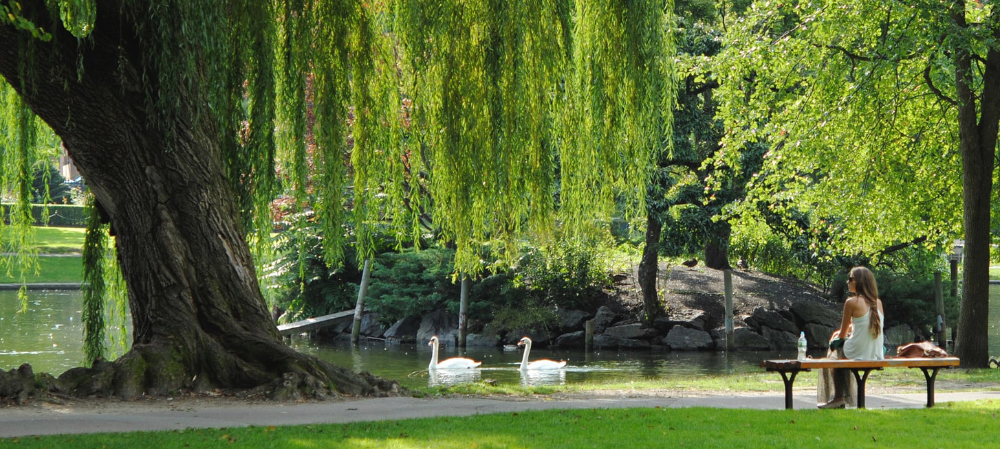

HOME>체육즐기기>산책•조깅 코스
산책•조깅 코스
- 
-
- 올림픽공원의 참모습 다섯개의 산책길과 조깅코스
- 몽촌토성을 중심으로 43만평의 올림픽공원에는 호반의 길, 토성의 길, 추억의 길, 연인의 길 그리고 젊음의 길로 산책 및 조깅 코스로 구성되어 각 코스마다 올림픽공원의 참못브을 즐길 수 있습니다.
- 마음의 평정과 삶의 여유를 느낄 수 있어 주변에 있는 직장인들이 아주 좋아하는 코스 ‘호반의 길’, 유명한 ‘깔딱고개’가 있어 조금 힘이들지만 확트인 백제유적과 잔디밭을 내려다 볼 수 있어 가족간의 사랑을 느낄 수 있는 ‘토성의 길’, 몽촌토성을 중심을 기점으로 두 개의 원을 그리는 추억의 길은 조용히 사색하면 산책할 수 있는 늦가을에 잘 어울리는 코스이며 88호수 주변과 몽촌토성 주변을 도는 연인들이 다정하게 거닐기 좋은 코스 ‘연인의 길’, 마지막으로 젊음의 길은 올림픽공원 외곽을 돌아보는 코스로 각종 마라톤대회나 달리기대회의 장소로 널리 쓰이고 있기 때문에 땀을 쭉 빼며 달리는 사람들이 좋아하는 코스입니다.
산책•조깅코스
| 구분 | 거리(M) | 범례 |
|---|---|---|
| 호반의 길 | 1,302m | 평화의광장 → 곰말다리 → 소마미술관 → 평화의광장 |
| 토성의 길 | 2,210m | 몽촌토성순환로 |
| 추억의 길 | 3,350m | 곰말다리 → 몽촌토성 중심 → 움집터전시관 → 야생화학습장 → 몽촌토성 순환 → 피크닉장 → 곰말다리 |
| 연인의 길 | 4,290m | 곰말다리 → 몽촌토성 중심 → 서울역사편찬원 → 88마당 → 삼거리매점 → 몽촌토성 중심 → 피크닉장 → 소마미술관 → 평화의광장 → 곰말다리 |
| 젊음의 길 | 3,150m | 자전거 순환도로 |